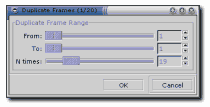
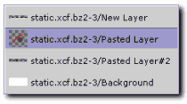
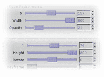
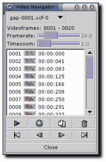
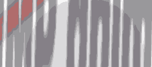

Welcome to the advanced GIMP animation tutorial. Here you'll learn how to use the GAP, GIMP animation package.
It is very advanced, but the user interface might be confusing for some at first.
That's why we'll start with a little theory before we move over to the practical part.
The key function of the GAP is the move path dialog.
Please go to the "Using GAP" tutorial to learn more about the tool.
To make things easier, we'll start with a ready-to-go static image. To load it into GIMP, just copy the link to the image on the left by selecting copy target or copy shortut from the image context menu accessible by pressing right mouse on the image. In GIMP, just press Ctrl+O and paste the URL to the open dialog. Gimp will download the compressed image and open it transparently so you don't have to bother.

Now drag the background layer from the static image to the GIMP toolbar. This will create a new white image we'll use as a base for our animation.
To be able to work with GAP you need to save it in GIMP's native format, .xcf. Create a separate directory for the file,
it will fill with many frame files soon. The file needs to be named like this:
name-0001.xcf
You can only change the name part. The rest needs to be exactly the way shown. GAP works on series of .xcf images, so that you can work with layers
the same way as you do in static images. You don't have to copy the file yourself to add a frame. GAP has series of functions to help you manage frames.
We'll create a 20 frame animation, so the first thing will be to copy the first frame 19 times using the video/duplicate frames function.
 
Now it's time to use the move path function. Make sure you have the static image open but use the function on the white background image.
In the dialog, select the logo image as source and make sure you set the stepmode to none! Keep the mode as normal and choose some handle mode.
I have used center, so use that if you're going to stick with the parameters provided here.
For the logo we'll animate two parameters. First, we'll zoom out the logo so it appears to fly away from the observer and combine that with opacity increase.
For the first animation point use the following parameters: x:157, y:74, width:800, height:800, opacity:20. Keep the rest default.
Now add a new animation point by clicking on the add point button. Notice how the status above the button changed to current key: [ 2 of 2 ].
Now change the width, height and opacity back to 100%. You can check the result on any animation point by navigating to it (using next and previous or other buttons)
and clicking on the update preview button. You can also preview the whole animation using the Anim preview button.
This will create a new layered image, so don't be impatient, it takes a while.
Adding points to your animation creates linear time segments between those. If you want to create non-linear animation,
just set a specific frame to the active point using the keyframe slider. We won't need it fof the logo animation, so let's just press ok for now.
 
Now we have a rendered sequence of images. You can navigate them easily using the video/VCR navigator. Pressing play on the navigator will call two functions,
frames to image and animation playback, so it's fast and convenient to use it to check the looks of your animation.
You can also specify the default delay between frames by setting the framerate in FPS (frames per second). The higher the value, the smoother the animation will be,
but more frames will be needed. You can also render only segments of the whole animation by selectiong particular frame thumbnails in the navigator before pressing the play button.
Use shift, ctrl or drag your mouse to select multiple frames. If you press Shift while pressing the play button,
the resulting animation-image will be optimised (as discussed in the simple animation tutorial).
As you can see on the image above, I have added some more movement effects for every source layer of the static image using only the move path dialog.
You can now try to recreate the animation yourself, you know tool to be able to.
All we need to do now is to save the animation. You can choose to go for the GIF format as I did with the image above,
but the filesize is too huge to be widely accepted on the web anyway, so you can consider using a regular animation format
like avi (needs special version of the xanim player from Loki) or mpeg1 / 2.
To save the animation as gif, first apply the video/frames to image function. This will create a single multi-layered image with the specified delay.
Now apply the animation optimize filter (not that useful in this case) and finaly index the image to 16 color without using any color dithering.
The file will still be about 170kB, so it's huge. You can consider trying some specialised optimisation software like GIFsicle.
Maybe MNG with its sprite based animation will make it more suitable for the web. Rendering will happen on the browser side and I'm very excited about the idea.
Last thing I can't help myslef not to mention is to thank Wolfgang Hofer for making such a great plugin that takes GIMP functionality to a new level. With GIMP 2 rendering engine we'll probably see more "applications" like that using GIMP's features to provide us with another area of application. I'd also like to thank the GIMP developer community to work hard every day to give us the best web gfx tool there is. If you just started to experience the Gimp, don't hesitate and drop by up at #gimp on irc.gimp.org:6669.
The original tutorial can be found here.